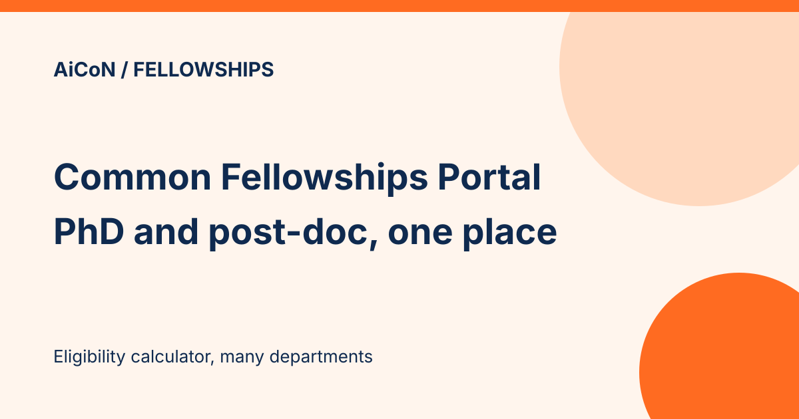

Common Fellowships Portal: PhD and post-doc fellowships in one place
The Common Fellowships Portal (fellowships.gov.in) gathers doctoral and post-doctoral fellowships of several government departments in one place, with an "Am I Eligible?" calculator. The portal says the departments of the Ministry of Science and Technology came together to create it, and the Department of Biotechnology developed it.

What is on the portal?
Doctoral fellowships
For studentships and contingency support to pursue a PhD, with support for 5 years, per the portal. It lists: AICTE, CSIR, DAE/DoS, DBT, DST, ICMR, MoES/MoTA and UGC.
Post-doctoral fellowships
For researchers who already hold a PhD, with fellowship and contingency and/or research grants in basic or applied science. Some schemes aim to bring researchers working abroad back to India. It lists: CSIR, DAE/DoS, DBT, DBT MK Bhan Fellowship, DST, ICMR, MoTA and UGC.
The eligibility calculator
According to NDTV's March 2024 launch report, the "Am I Eligible?" tool checks eligibility against the details you enter. We did not run the calculator. A news report on the portal's launch in March 2024 also describes it (NDTV). Treat the result as a first filter, not a final answer.
How to use it well
- Open the doctoral or post-doctoral list that matches your stage.
- Run the calculator with accurate details.
- Open each suggested scheme's own page or notice and check dates, amounts and documents.
- Apply only through the official portal or the scheme's official link. Verify the destination and any fee in the scheme notice before submitting information or paying.
We did not log in or apply. We read the portal's calculator page on 12 October 2026. The home page did not load text for us.
Frequently asked questions
Is it only for science?
The portal describes it as for doctoral and post-doctoral fellowships of various government departments. Check each scheme's subject scope.
Is there a fee?
The pages we read do not mention one. Check the scheme notice.
What changed since this post?
The official calculator page and NDTV's 13 March 2024 launch report were checked on 12 October 2026. The calculator page still lists the departments and describes 5 years of doctoral support. The portal home page could not be fetched. No login, eligibility result or application was tested. Fees, current amounts, deadlines and open calls remain unverified; read each scheme's own notice.
Sources: Common Fellowships Portal, NDTV report, March 2024. Checked 12 October 2026. This is an AiCoN explainer, not a government publication.